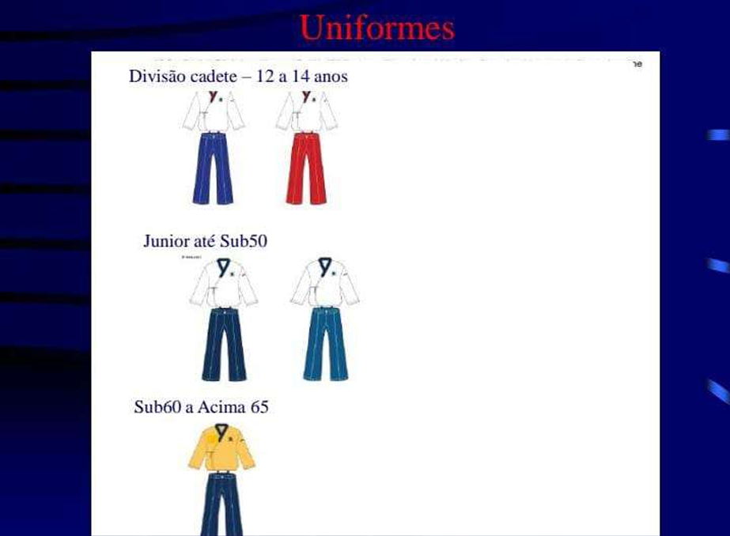
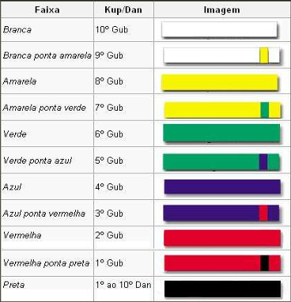

O que realmente é o taekwondo
O Taekwondo de hoje em dia, teve muitas mudanças em suas estruturas, inclusive em seu nome! Taekwondo é de origem coreana e significa A arte de usar pernas e braços na luta. Mais de dois mil anos atrás, o rei Qing Heung da 24ª dinastia Silla formou um esquadrão de elite de guerreiros especializados em combate corpo a corpo. Esse grupo se chama Hwa Rang Do e age como um samurai japonês. Além de serem lutadores habilidosos com armas como lanças, arcos, flechas e espadas, os membros desta unidade se especializam em artes marciais. Especialmente Subaru que usa as pernas e os braços largamente. Durante a dinastia Koryo (924-1392), os mestres desenvolveram 25 posições de luta cujas técnicas serviram de base para o nascimento do Taekwondo como o conhecemos hoje.
Após a invasão japonesa da Coreia a partir de 1957 De 1909 a 1945, as artes marciais coreanas foram banidas. Só voltaram ao hábito de treiná-los após o fim da Segunda Guerra Mundial, em 1945. O nome taekwondo só começou a ser adotado em meados da década de 1950, quando, ainda sob os efeitos da guerra da Coréia, travada entre 1950 e 1953, o general Choi Hong-hi conseguiu unir várias escolas de diferentes estilos de artes marciais sob um único combate, chamado taekwondo. Em 1964, o 1º Festival Nacional de Esportes foi realizado na Coréia, e em 1965 foi estabelecida a Confederação coreana de Taekwondo.
태 Tae (Pés)
권 Kwon (Mãos)
도Do (Caminho)
DOBOK
Dobok é o uniforme do Taekwondo. BOK significa roupa. Formado por três peças temos o Dobok: Jeogori (paletó), Vazi (calça) e Heori-Tui (faixa).
DO= significa “caminho”; portanto, a palavra Dobok pode ser traduzida como “vestimenta do caminho” ou “roupa do caminho”.
DOBOK - QUAL É O SIGNIFICADO DA COR BRANCA?
As raízes das artes marciais remontam pelo menos a 600 a.C., sempre caracterizadas por sistemas codificados de técnicas de treinamento, marcados pela autodisciplina, a humildade, a contenção e o respeito. Para realizar esses exercícios, o operador usa roupas ultrafinas e leves. que proporciona um movimento suave. Embora os estilos de luta possam ter diferido ao longo dos anos, uma coisa permaneceu constante: Dobok, que reflete a essência e o valor do MooDo (무도 - Caminho Marcial, Filosofia das artes Marciais).
Dobok é uma roupa de treinamento usada por artistas marciais coreanos. Do significa "caminho" e bok significa "roupas" ou "roupas de treinamento". O modelo atual de Dobok é feito de uniformes de treino japoneses (Judô-Gi e Karatê-Gi), embora as calças sejam geralmente mais largas e mais compridas que as de kimono. Apesar disso, os cronistas afirmam que os artistas marciais na era dos 3 Reinos da Coréia já usavam vestes semelhantes a Dobok.
Mas por que a cor branca?
Os japoneses adotaram o branco em seus trajes de treino para figurar os valores de pureza, autopreservação e simplicidade. Assim, o uniforme branco não indica classe social, então todos os alunos começam a aprender e treinar igualmente.
Para os coreanos, o dobok branco representa humildade. pureza e simplicidade. Eles também homenageavam o estandarte nacional de Taegukki (Tae - Universo, Gukki - Bandeira) porque acreditam que a essência do cosmo e suas origens, de todas as coisas brancas. Acredita-se que os coreanos são chamados de "Baekwi Min Jok (白衣民族)- A Nação ataviada de branco" porque gostam de roupas brancas.
No entanto, alguns grupos de pessoas possuem uma opinião diferente. Eles afirmam que “manter o Dobok na cor branca por a Coreia ser Baekeuiminjok está incorreto”. Esses grupos defendem seu ponto de vista argumentando que “as cores tradicionais da Coreia consistem em cinco cores: azul, branco, vermelho, preto e amarelo”. Assim, segundo eles, não se deve concentrar apenas na cor branca do Dobok, mas sim adotar as cinco cores tradicionais da Coreia.
Tal ponto de vista tem transformado os Dojangs e Dojôs ao redor do mundo em um verdadeiro “carnaval” e “desfile de fantasias” com modelos de Dobok coloridos, camuflados, ao mais puro “estilo Mortal Kombat”, perdendo-se desta forma, a beleza, a uniformidade, dando-se preferência à externação do ego e da classe social, esquecendo-se de vez da marcialidade da Arte praticada, onde prima-se pelo foco no aprendizado e não na ostentação das vestes.
Devemos lembrar da filosofia artística marcial do Dobok aparece no “Doeui (道依) – Princípio Moral”, da obrigatoriedade de se manter o Dobok limpo e melhorar a mente e o corpo.
Assim, mantendo o respeito histórico pelo tradicionalismo e o significado filosófico de “Baekeuiminjok”, com os ideais de pureza, inocência e nobreza, é que muitas associações mundiais, sérias e devidamente reconhecidas pelo governo coreano como a The Korea Hapkido Federation – KHF e World Taekwondo Headquarter – Kukkiwon, seguem adotando a cor branca nos Doboks.
POOMSAE
SUAS VARIAÇÕES, COMPETIÇÕES E UNIFORMES.
O poomsae é uma das maiores vertentes dentro do Taekwondo, consiste em um conjunto de movimentos de ataques e defesas, bases e chutes, executados sem nenhum tipo de alvo! É uma sumula de luta imaginaria contra adversários ao seu redor.
"Poomsae" é uma palavra coreana, uma combinação de "poom" e "sae". "poom" significa movimento, forma ou caráter; e "sae" aparência, estilo e forma.
POOMSAE OU TAEGUK:
Os TAEGUKs simbolizam o céu e a terra, a magnificência do universo. A posição TAEGEUK é o movimento que mostra o princípio da filosofia universal, baseando-se na teoria do positivo e negativo de TAEGEUK. As Linhas de movimento também se baseiam nos PARLGYE (oito GYE), onde são exploradas todas as posições de defesa, ataque, avanço, recuo, velocidade, intensidade de força. O essencial dessa posição está na exatidão e velocidade da respiração e movimento, a mudança rápida e correta do centro de equilíbrio, onde temos a aplicação da filosofia universal TAEGEUK.
Tae Guk é o símbolo sobre a regra científica da criação do universo e da maneira de viver do homem. A palavra
significa: TAE – Início e GEUK – Infinito.
O Tae Guk é formado da junção do Mu-Geuk (círculo), Yang I (curva em vermelho e azul) e seus Parl Gues (oito
trigramas de harmonia da natureza).
O Tae Guk é formado da junção do Mu-Geuk (círculo), Yang I (curva em vermelho e azul) e seus Parl Gues (oito trigramas de harmonia da natureza).
1. Tae Guk – Luz, centralização do universo e da vida.
2. Mu Guk – Força, raiz da vida.
3. Yang I – Movimento de evolução do universo e da vida humana como combinação entre a força positiva e a negativa ou entre a matéria e a não-matéria.
4. Parl Gue – São os oito trigramas (céu, lago, fogo, trovão, vento, água, montanha e terra) da natureza com o Tae Guk que cria harmonia e desenvolve os acontecimentos do universo. Quando o traço é maior significa positivo e menor negativo.
No total existem 8 poomsaes de faixa coloridas, e 9 poomsaes de faixas pretas!
QUAIS SÃO OS POOMSAES DE FAIXAS COLORIDAS NO TAEKWONDO?
1º Tae Guk Il Jang - FAIXA AMARELA (8º GUB): Representa o símbolo do "keon", um dos 8 Kwaes (sinais divinos), que significa o "positivo e o negativo". Como o "keon" simboliza o começo da criação de todas as coisas no universo, recomendamos o Teguk il jang no treinamento de Taekwondo. Esse poomsae é caracterizado pela sua facilidade na pratica, que consiste na sua maior parte de fazer as ações básicas, como are-maki, montong maki, montong dirgui, e ap-tchagui. O aluno do 8º Gub pratica esse poomsae.
2º Tae Guk I Jang – FAIXA AMARELA PONTA VERDE (7º GUB): Simboliza o "Tae", um dos 8 sinais divinos, que significa a firmeza e a suavidade externa. Uma introdução de olgul-maki é um novo desenvolvimento desse poomsae. As ações de aptchagui aparecem mais freqüentemente do que no Teguk Il Jang. O aluno de 7º Gub pratica esse poomsae.
3º Tae Guk Sam Jang - FAIXA VERDE (6º GUB): Simboliza o "Ra", um dos 8 sinais divinos, que representa "quente e resplandecente". Isso encoraja o aluno a abrigar um senso de justiça e ardor pra treinar. Uma realização bem sucedida desse poomsae dará ao aluno uma promoção a uma faixa verde com ponta azul. Novas ações como: han sonnal mok thigui e han sonnal iop maki. Esse poomsae é caracterizado pelas sucessivas defesas e ataques. É dada ênfase para os contra-ataques empregados contra o ataque do oponente. O aluno do 6º Gub pratica esse poomsae.
4º Tae Guk Sa Jang – FAIXA VERDE PONTA AZUL (5º GUB): Simboliza o "Jin", um dos 8 sinais divinos, que representa o grande poder do trovão e da dignidade. Os novos movimentos são: sonnal montong maki, pyon son cut seo thirgui, jebi poom mok thigui, yop tchaqui, montong bacat maki e dung jumok olgul ap thigui. Em vários movimentos usamos a base duit kub caracterizando assim esse poomsae. O aluno do 5ºGub pratica esse poomsae.
5º Tae Guk Oh Jang - FAIXA AZUL (4º GUB): Simboliza o "Son", um dos 8 sinais divinos, que representa o vento, significando tanto uma força potente quanto a tranquilidade de acordo com sua força e fraqueza. Novos movimentos são: me jumok nerio tchigui, palkup dolio tchigui, iop tchagi, iop dirugui e palkup pyo jok tchigui. Também é caracterizado pelas sucessivas defesas de montong maki e are maki. Os alunos do 4º gub praticam esse poomsae.
6º Tae Guk Yuk Jang – FAIXA AZUL PONTA VERMELHA (3º GUB): Simboliza o "Kam", um dos 8 sinais divinos, que representa a água, significando um continuo fluxo e suavidade. Novos movimentos são: han sonnal pitrô maki, olgul bacat maki, are retchiô maki e batang son montong maki. Deve-se ter cuidado para fazer com que o pé do chute termine no ponto certo após o dolio-tchagui, a palma da mão do batang son montong maki, deve ficar na altura do peito, no han sonnal pitrô maki virar bem o tronco para o lado oposto da perna da frente, sem levantar o calcanhar de trás. Ele é praticado pelo aluno do 3º gub.
7º Tae Guk Chil Jang - FAIXA VERMELHA (2º GUB): Simboliza o "Kan", um dos 8 sinais divinos, que representa a montanha, significando ponderação e firmeza. Novos movimentos são: sonnal are maki, batang son gudurô montong maki, montong rethio maki, iop dirgui, murup tchigui, gauí maki, du jumok jetchio dirgui, otgorô are maki, ding jumok bacat tchigui e bo jumok. Uma conexão refinada de movimentos é importante para treinar esse poomsae. Os alunos de 2º gub praticam esse poomsae.
8º Tae Guk Pal Jang - FAIXA VERMELHA PONTA PRETA (1º GUB): Simboliza o "Kon", um dos 8 sinais divinos, que representa o "yin" e a Terra, significando a origem e a povoação e também o começo e o fim. Novos movimentos são: goduro montong maki, ue santul maki, dangyo dirugui e geouduro are maki. Esse é o último dos 8 Teguk, que poderá permitir ao aluno passar pelo exame de promoção ao 1º Dan (faixa preta).
QUAIS SÃO OS POOMSAES DE FAIXA PRETA?
1º Poomsae, KORYO 1° DAN: Este poomsae de 1º Dan simboliza um homem instruído que é caracterizado por um espírito marcial forte e também é o nome de uma das antigas dinastias da Coreia. Esta dinastia ficou famosa pela valentia de seu povo que derrotou os mongóis.
2º Poomsae, KEUMGANG 2° DAN: Poomsae de 2º Dan, a Montanha de Kumgang na península coreana, que é considerada como o centro de espírito nacional e o "Kumgang" - o guerreiro de Yeoksa, nomeado por Buda - representa o guerreiro mais poderoso. Simboliza a solidez. É como um diamante que não pode ser quebrado. Técnicas novas introduzidas neste poomse são batason-tok tchigi, Kumgang-maki, san tul-maki, e o rak-dari-sagui.
3º Poomsae, TAEBAEK 3° DAN: Poomsae de 3º Dan, o nome de uma montanha com o significado de "montanha luminosa", onde Dangun, o fundador da nação coreana, reinou no país. A montanha luminosa simboliza a santidade da alma e o pensamento de Dangun, que fundou a Coreia há 4300 anos. Esta sequência também está associada com a luz.
4º Poomsae, PYONGWON 4° DAN: Pyongwon significa "planície". É a fonte de vida para todas as criaturas e o campo onde os seres humanos vivem a vida.
5º Poomsae, SIPJIN 5° DAN: Sipjin derivou do pensamento de longevidade que defende que há dez criaturas de vida longa. São estes: 2 corpos celestes, 3 recursos naturais, 2 plantas e 3 animais. Tudo que dá fé aos seres humanos, esperança e amor. O poomsae Sipjin simboliza essas coisas.
6º Poomsae, JITAE 6° DAN: Jitae significa: "Um homem que se levanta do chão com os dois pés, examinando o céu". O homem na terra representa o modo de lutar para mudar a vida humana. A poomsae simboliza vários aspectos que acontecem no curso da luta do ser humano para existência.
7º Poomsae, CHONWON 7° DAN: Chonkwon significa "O grande Céu", que é a origem de toda a criatura e o cosmo. Sua competência infinita significa a criação, mudança e conclusão.
8º Poomsae, HANSU 8° DAN: Hansu significa: "A água é a fonte da vida e cultiva todas as criaturas". Hansu simboliza o nascimento de uma vida, crescimento, força e fraqueza, magnanimidade e harmonia, adaptabilidade. Deveriam ser praticadas ações suavemente como água, mas continuamente, como uma gota de água que junta para fazer um oceano.
9º Poomsae, ILYEO 9° DAN: Ilyeo quer dizer: "O pensamento do grande budista da Dinastia de Silla", que é caracterizado pela filosofia da mente (espírito) e do corpo (matéria). O poomse Ilyeo representa a harmonização do espírito e do corpo, que são a essência da arte marcial; um treinamento longo, com vários tipos de técnicas e cultivo espiritual, para a conclusão da prática do Taekwondo.

Histórico:
No século 35 a.C. no reino de Sin Si, o príncipe Bok-He, caçula (12º filho do rei Te Ui), recebeu sabedoria através de três espíritos (Hwan In, Hwan Mu e Hwan Gum – formadores da península da Coréia) e o Parl Gue no templo onde rezava para Dan Gun (Fundador da Coréia). Na sua profissão era especialista em chua e natureza – desenhou Ra-Do (um dragão que sai do Rio Hwang Ra na China carregando o sol, a lua e as estrelas). Assim foi criado o Tae Guk e o Parl Gue que mais tarde foram desenvolvidos e completados pelos sábios Moon, Ju Gong, Gong Ja e Il Bu Kim.
FUNDAMENTO:
O Poomsae é fruto científico da história e de acontecimentos de 5 mil anos de existência da Coréia. Pode-se observar e, sua parte técnica que o Kyorugui é a aplicação do Poomsae na prática. Mesmo na teoria, pode-se descobrir uma maneira de agir do Poomsae. Podemos finalizar dizendo que o Poomsae do Taekwondo é um modo de se executar movimentos com a utilização de métodos, obtendo assim o aperfeiçoamento físico e mental.
COMPETIÇÕES E UNIFORMES:
As competições de poomsae atuais e oficiais pelas regras WT, consistem em avaliar as técnicas dos atletas e deduzir pontos sobre sua apresentação individual, sendo faixa colorida e duas apresentações seguidas no caso de um faixa preta! Sendo assim cada competidor ao entrar em quadra ele tem sua nota máxima de 10 pontos sendo eles divididos em 4.0 em técnica e 6.0 em apresentação!
Como os pontos são divididos?
Avaliações Técnicas inicialmente 4,0
Sofrendo deduções, de 0,1 para erros leves:
Exemplos: (mão levemente mais alta/baixa...pés tortos na base, para fora ou para dentro ou mal feita...mas postura ou má preparação de movimento... etc.)
Ou deduções de 0,3 para erros graves:
Exemplo: (Trocar a base por outra... Trocar a forma de defesa ou ataque por outro movimento.... Movimentos especiais fora do tempo de execução... Não ter grito na contagem correta ou somente não ter grito.... todo e qualquer desequilíbrio do atleta, seja em qualquer contagem do movimento... Não olhar para a posição correta durante o movimento... criar uma contagem não existente no poomsae... fazer para direção oposta do movimento... etc.)
Nota de Apresentação corresponde aos outros 6,0 pontos.
Divididos em 3 partes, o árbitro deve julgar o poomsae num todo e decidir qual melhor nota se adequa ao atleta no final de seu movimento.
1° Força e velocidade. (potência dos golpes e uma velocidade nos movimentos.)
De 0,5 a 2,0.
2° Ritmo e Coordenação. (apresentação constante e uniforme de apresentação e bom casamentos das técnicas de base e mãos.)
De 0,5 a 2,0.
3° Expressão de Energia. (Força nos gritos, apresentação confiante, uniforme limpo e arrumado, e de acordo com a categoria, Chutes com muita flexibilidade)
De 0,5 a 2,0.
Essas notas são dividas por 5 a 7 árbitros dependendo do nível do campeonato, e dessas 7 notas, a maior e a menor são descartados, para que se haja uma média entre todas as notas e assim tendo o resultado final do atleta.
Os poomsaes de apresentação dos atletas faixas pretas, são sorteados em alguns dias antes da competição, o sorteio acontece de acordo com as categorias de idade, como base na imagem a seguir:

Outra vertente principal sobre as categorias de faixa preta, nas competições na regra oficial WT, são que todas as categorias tem uniformes em gola Y, e de cores diferentes para cada idade e sexo; com exceção da categoria acima de 60 anos master... pois nela, tanto feminino quanto masculino usam o dobok na cor dourada. Segue o exemplo abaixo:
3º GRADUAÇÕES DO TAEKWONDO:
HIERARQUIA, JURAMENTOS E CUMPRIMENTOS.
As graduações do Taekwondo geralmente são um assunto polêmico, pois cada grupo/equipe ou até mesmo entidade, com um [GRÃO MESTRE 7º Á 9º DAN] OU UM [MESTRE 4º Á 6º DAN] tem a liberdade de como será a ordem de faixa da sua academia ou equipe!
O padrão oficial usado pela WT (World taekwondo) e na Kukkiwon (World Taekwondo Headquarter) são as seguintes faixas:
10º FAIXA BRANCA (10º GUB).
9º FAIXA BRANCA PONTA AMARELA (9º GUB).
8º FAIXA AMARELA (8º GUB).
7º FAIXA AMARELA PONTA VERDE (7º GUB).
6º FAIXA VERDE (6º GUB).
5º FAIXA VERDE PONTA AZUL (5º GUB).
4º FAIXA AZUL (4º GUB).
3º FAIXA AZUL PONTA VERMELHA (3º GUB).
2º FAIXA VERMELHA (2º GUB).
1º FAIXA VERMELHA PONTA PRETA (1º GUB).
(1º, 2º 3º POOM) CANDIDATO Á FAIXA PRETA.
É muito comum hoje em dia, alguns grupos de faixa que aboliram as faixas PONTA AMARELA E CANDIDATO! Pois as acham perda de tempo do aluno ou algum tipo de exame desnecessário. Também é muito comum alguns grupos e equipes não utilizarem as faixas ponta... preferindo usar faixas inteiras com outras cores no lugar, como por exemplo nas cores cinza, laranja, roxa, marrom etc...
O exemplo abaixo mostra os padrões de faixa oficial e outros tipos:

QUAL A SIMBOLOGIA DOS DANS E O 10º DAN?
FAIXA PRETA - 1º ao 10º Dan - "Sabedoria e conhecimento" - O Universo:
É o oposto ao branco, o alcance da maturidade e do conhecimento é o crescimento intelectual e espiritual do praticante, a consciência de que o Taekwondo é muito mais do que uma simples luta, se confunde com a sua própria vida através de seus princípios e atitudes. A caminhada do praticante é dividida inicialmente em Gubs e em seguida em Dans. Cada Gub corresponde a uma faixa colorida que o taekwondista amarra na cintura, por sobre o dobok, a vestimenta característica dessa arte marcial. A partir daí, o praticante chega aos Dans, cujos sinais exteriores limitam-se à presença não-obrigatória de pequenos traços perpendiculares na faixa preta, indicando 1º Dan, 2º Dan etc, até o póstumo 10º Dan, que só é concedido ao 9º Dan que morre.
O título de 10º DAN é considerado póstumo, pois na filosofia coreana, as pessoas quando elas morrem, ela tem em seu entendimento que a pessoa que faleceu, conseguiu cumprir todos seus objetivos em vida e pode finalmente descansar em paz com todas suas metas realizadas! No caso dos taekwondistas que são considerados os guerreiros da pátria coreana...ele tem sua jornada no taekwono desde muito cedo em suas vidas...como por exemplo na escola e na carreira militar! E em seu tempo de vida desafia a si mesmo e seus limites, buscando por novas graduações, e quando o 9º DAN é atingido em vida, esse taekwondista quando chegar no momento de seu descanso eterno levará consigo seu 10º DAN, representando a perfeição e conclusão de seus objetivos em vida e reconhecimento por toda sua dedicação a sua arte marcial!
Há algumas exceções quanto ao título póstumo de 10º DAN, como os 10º DAN honorário! Que são dados a grandes pessoas/ou figuras públicas mundiais, podendo ser também grandes lideranças mundiais, um exemplo ainda recente é do PAPA FRANSISCO que recebeu o 10º DAN honorário, em 2017 pela antiga WTF, atual WT.
“O encontro entre o Papa e o presidente da WTF aconteceu na Praça de São Pedro, na Cidade do Vaticano e, de acordo com Choue, “foi uma enorme honra conhecer um homem que tem uma dimensão moral tão grande em todo o mundo.
Segundo informação da WTF, durante a reunião com o presidente Choue, o Papa manifestou grande interesse na Fundação Humanitária de Taekwondo (THF), projetada pela WTF com o objetivo de capacitar os mais necessitados, ensinando Taekwondo para os refugiados e para outras pessoas em situações de risco.
O Papa Francisco é reconhecido por ser fã de esportes e não esconde a sua paixão pelo clube de futebol argentino San Lorenzo.
Em outubro de 2016, a equipe de demonstração da WTF já havia se apresentado perante o Papa, na primeira Conferência Global sobre Fé e Esporte, que se realizou no Vaticano.”
JURAMENTO DO TAEKWONDO:
O juramento do Taekwondo pode ser um código de ética que o praticante deve saber desde sua entrada no taekwondo, é o conjunto dos princípios básicos do Taekwondista, onde ele aprende o espirito do taekwondo e seus fundamentos, levando com ele sua realização não somente dentro do tatame mais também em todos os aspectos de sua vida.


Cumprimentos do taekwondo:
Como todos sabem, o taekwondo é uma arte marcial militar coreana... E por conta disto o respeito e hierarquia são absolutos! E sendo assim no taekwondo, a sua hierarquia se divide em alguns grupos de faixas como: iniciante, intermediário e avançado. Nessas divisões, os praticantes de categoria mais avançada recebem comprimentos no início e ao término dos treinos, seguindo a sua ordem decrescente:
KWANJANIM: GRÃO MESTRE (ACIMA DE 7º DAN).
SABUNIM: MESTRE (DE 4º AO 6º DAN).
KYOSANIM: PROFESSOR (DE 1º AO 3º DAN).
JOKYONIM: AUXILIAR OU TERCEIRO EM COMANDO (DO 2º AO 1ºGUB).
Também outro comprimento mais importante a vir primeiro do que as graduações tanto no início quanto no término dos treinos, são as saudações as bandeiras!
No caso tendo sempre a bandeira da Coréia do Sul ao lado direito, e do respectivo país ao que se esta presente no momento ao lado esquerdo, no nosso caso a bandeira do Brasil!
Kuki e Derraio Kiunhê= Saudação as Bandeiras.